原文连接:https://www.cnblogs.com/wlrblog/p/PythonStudyTwo.html
Python基本图形绘制 —— turtle库
一、turtle程序语法元素
1、库引用与import
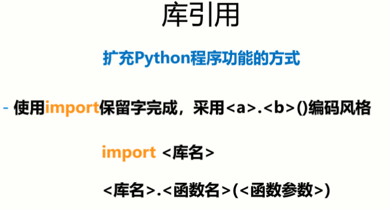
· import 更多语法
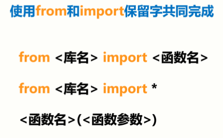
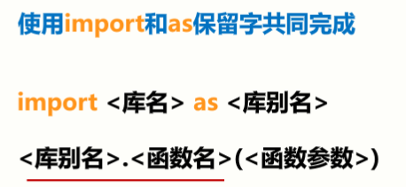
所以，此处引入turtle库有三种方法：
（1）import turtle
（2）from turtle import *
（3）import turtle as t（强烈推荐）
2、turtle 画笔控制函数
2.1 画笔的抬起与落下
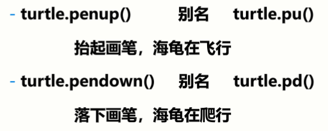
2.2 画笔的宽度和颜色设置
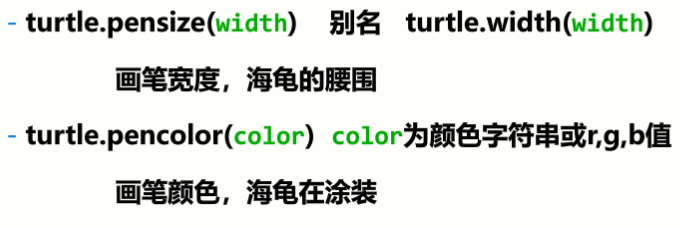
注：pencolor(color)的color可以有三种形式

3、turtle运动控制函数
控制海龟行进：走直线 & 走曲线
3.1 走直线：
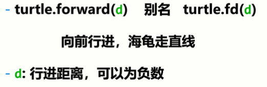
3.2 走曲线：
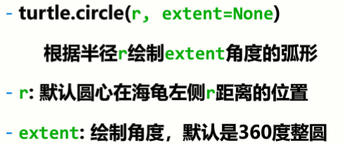
4、turtle 方向控制函数
控制海龟面向方向：绝度角度 & 海龟角度
4.1 绝对角度
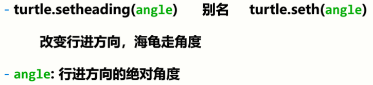
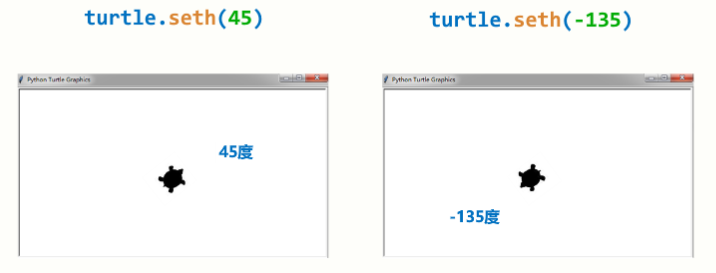
4.2 海龟角度
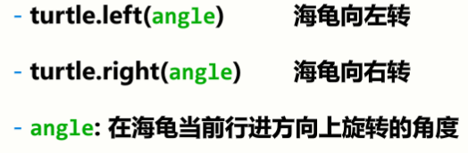
5、循环语句与range()函数
5.1 循环语句
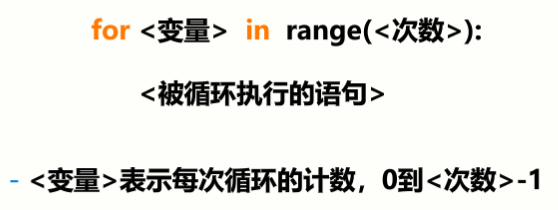
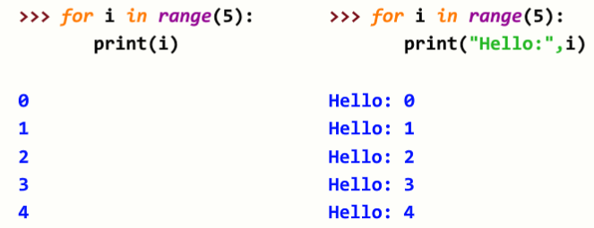
5.2 range() 函数
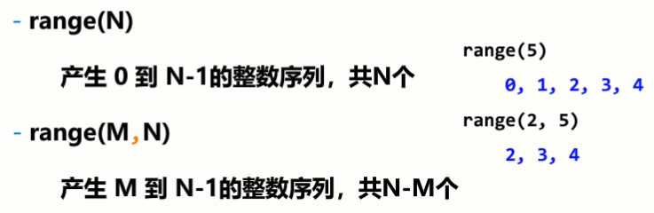
二、turtle绘图窗体布局
1、turtle的绘图窗体
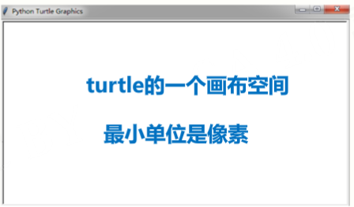
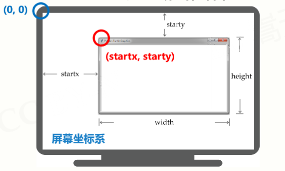
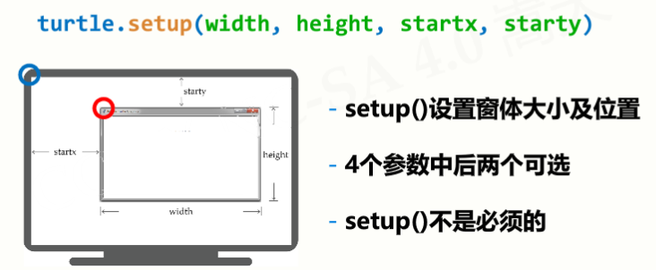

2、turtle空间坐标体系
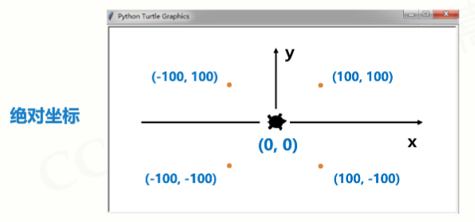
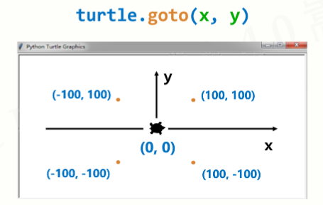
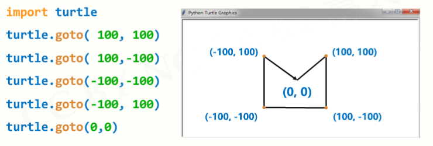
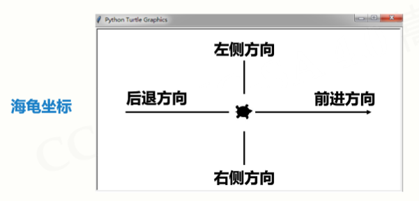
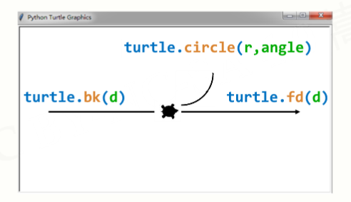
3、turtle角度坐标体系
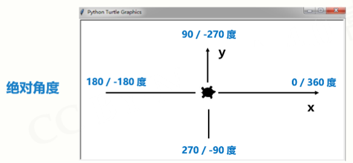
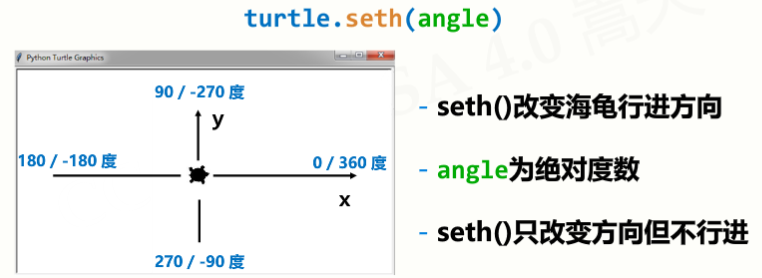
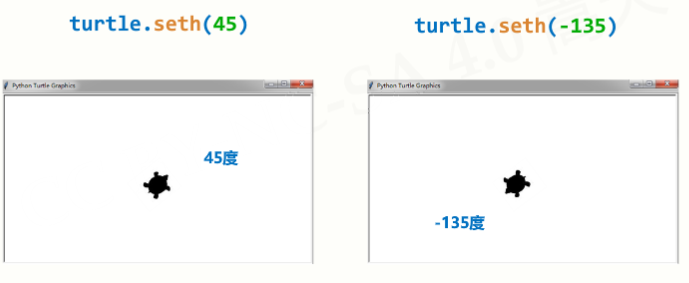
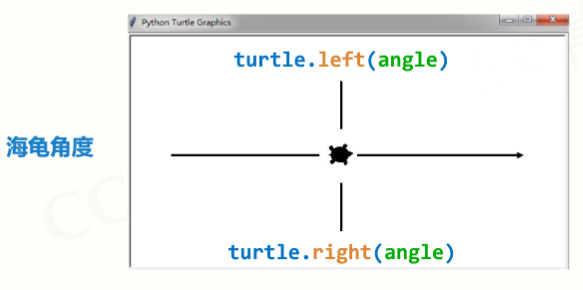
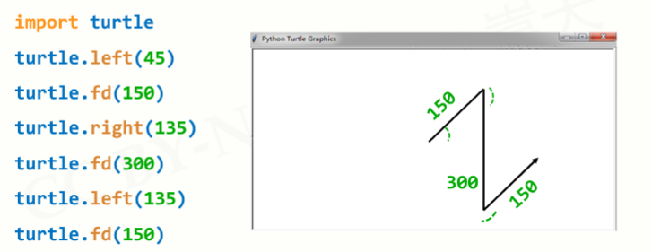
4、RGB色彩模式
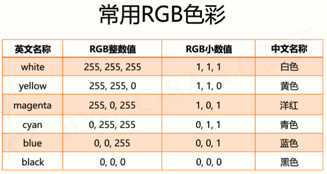

三、绘制蟒蛇实例
1、设置画笔
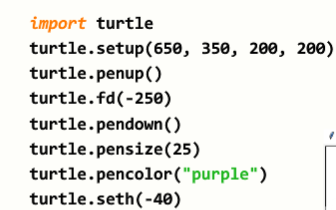 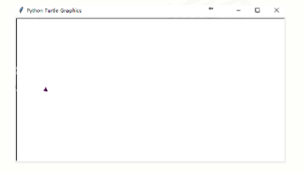
2、通过循环绘制蟒蛇身体
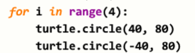 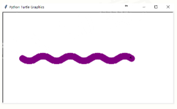
3、绘制头部
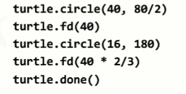 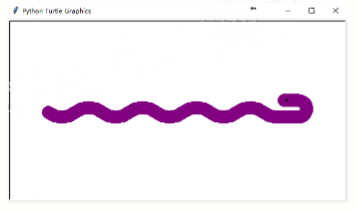
4、完整代码：
import turtle
turtle.setup(650, 350, 200, 200)
turtle.penup()
turtle.fd(-250)
turtle.pendown()
turtle.pensize(25)
turtle.pencolor("purple")
turtle.seth(-40)
for i in range(4):
turtle.circle(40, 80)
turtle.circle(-40, 80)
turtle.circle(40, 80/2)
turtle.fd(40)
turtle.circle(16, 180)
turtle.fd(40 * 2/3)
turtle.done()